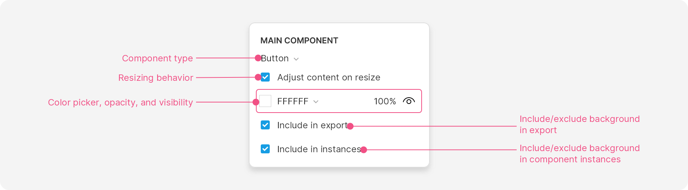
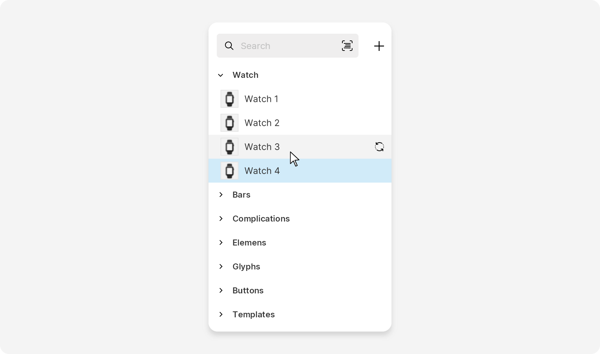
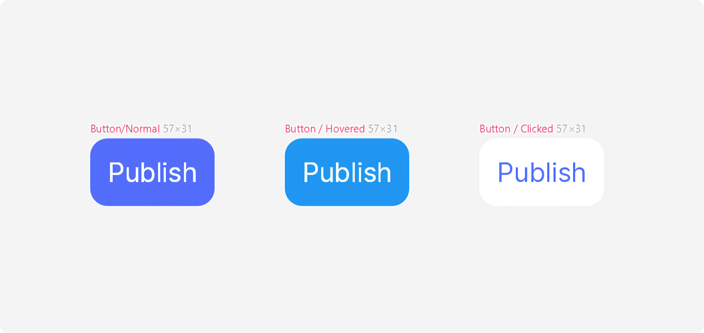
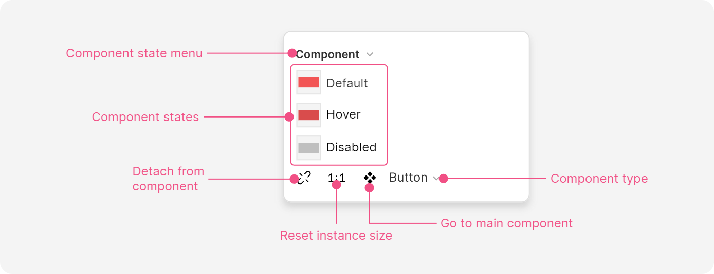
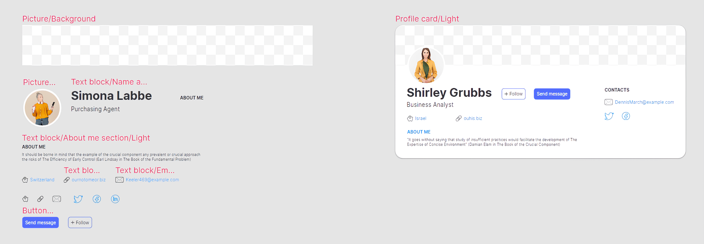

Increase the speed and productivity of your design workflow with reusable components
Components are reusable design elements that speed up your workflow and keep your designs consistent.
The main advantage of using components is that you can edit multiple instances of an element at once. For example, if you need to make a change to a button that appears in several places in your design, you can update the button component and the change will apply to all its instances:
These are the basic terms related to components and their functions:
To create a component:
+ in the Component section of the right
panel or press Ctrl + Alt + K / ⌘ + ⌥ + K.
You can also select a layer and click
When you create a component from a layer or layer group, Lunacy automatically frames it and transfers it to a separate Components page where it's stored as a main component. An instance of the newly created component remains on the canvas.
If you create a component out of a frame, it will stay on the canvas as a main component, which you can then copy to create instances.
The difference is shown here:
Main components are bold and colored pink in the Layer list, and there's a component symbol in front of their name.
Component instance names aren't bold but have the instance symbol and the same pink color. When they're selected, their properties and options appear in the Component section of the right panel.
All the components in your document appear in the Components tab in the left panel.
To add a component instance to the canvas, drag it from the left panel to where you want to place it:
Right-click a component in the left panel to bring up the context menu with these options:
When you select a main component, the Component section in the right panel displays these properties:
Select one of the presets to organize your components by type.
Choose whether to adjust the content of the component when it's resized.
Set the component's background color and show/hide it by pressing the
Include/exclude the component's background when exporting it.
Include/exclude the component's background in its instances.
You can use Components page that Lunacy generates automatically to store all of your main components. Alternatively, you can turn any page into a Components page:
You can create several states for a component and switch between them as needed in the right panel.
To create a component state:
+ in the Component section of the right panel
or press Ctrl + Alt + P / ⌘ + ⌥ + P.
A new component will appear near the default main component, defining the new component state.
Lunacy also changes the name of components when you create new states, automatically placing them into categories. You can edit categories anytime in the Components tab.
New component states for a distinct component will be displayed in the right panel as you select the component's instances.
To switch through component states:
As your document grows along with the number of components in it, you'll probably want to organize them so you can quickly find the necessary component when you need it.
This is how componenet categories and subcategories appear in the Components tab:
They also appear in the Component state dropdown menu in the right panel.
You can manually place your components in categories in the
left panel (the Group option on the context menu) or use / in
component names, like this:
Category name / Subcategory name /Component name.
Here's an example with just the category name and component name:
Still, the quickest way to categorize your components is to create component states.
Delete main components from the Components tab (using the context menu) or the Components page (simply delete the component frame).
When you delete a component, all of its instances turn into frames.
You can edit a main component:
Enter or choose Edit component in the context menu.Esc to exit the component editor.
Use the Components tab or the right panel swap between instances from entirely different components. Simply select an instance you want to replace and use one of the following methods.
Method 1:
Method 2:
We already covered how to create component instances to the canvas from the Components tab. You can also duplicate or copy/paste instances directly onto the canvas.
With a main component or instance selected:
Ctrl + D or Ctrl + C → Ctrl + V.Alt, then drag to place an instance on the canvas.For a component instance, the Component section in the right panel will look like this:
A dropdown menu displaying the current state of the component. When open, it shows all other components and UI kits available in the document.
If you didn't create any component states, this property will read Default State.
Select one of the presets to organize your components by type. Changing this for a component instance will affect its main component and vice versa.
Detach the instance from its main component or press
Ctrl + Alt + D / ⌘ + ⌥ + B.
If you resized the instance, click this button to revert it to the size of the main component.
Redirects you to the instance's main component.
See the corresponding main component property.
Once you modify an instance, the
Click it to reset the override and revert the instance back to the style of the main component.
To reiterate, an override is any edit you make to a component instance. Let's go over them in detail.
Click
Some basic overrides you can make are changes to layer color, text, or image content.
Below, we have a simple example of a card component consisted of an image (an oval with an Image fill) and a labeled button. We make three types of overrides to the card, changing the button color, the button label, and the image.
You can easily reset all of these overrides by pressing
Here's a full list of layers and properties you can create overrides for:
To understand how all of them work, we'll use more complex examples. Also, instead of making some overrides (like text and image edits) manually, we'll use some of Lunacy's handy time-saving features like text generation and the Avatar tool.
One of the examples we'll use is this profile card UI:
All the components used in the layout are on the left, and their instances are nested in the profile card frame, which is a component itself.
When using complex components such as this one, you can easily change the states of the nested components, manually edit them, or modify all instances by adjusting the main component.
The two images in the card are easily editable. The background behind the profile photo is a simple shape with an Image fill.
To change it in an instance, you only need to click it, then select the color icon in the Fill section and choose an image:
You can do the same with the profile picture, provided it's a circle with an Image fill. To speed up the process, we recommend using Lunacy's Avatar tool for placeholder profile pictures: simply press Q to place a randomly generated avatar picture directly onto the canvas.
Now, when you make a component instance, a new avatar is generated automatically:
You can easily change the text and/or its properties in the component instance text layers.
Use the Text section in the right panel to:
You've seen how using components makes the design process faster and much easier. Adding auto layouts to the mix speeds things up even more.
Creating components with auto layout, then nesting those in larger auto layout frames makes it easy to manage complex designs and quickly update them when needed.
If any spacing or padding distances seem off or you're still in drafting mode, using components and auto layouts is the fastest way to test different versions of your designs.
For example, there's quite a few auto layouts in our profile card examples:
To recap, here's a list of context menu options and shortcuts you can use to work with components, along with corresponding shortcuts, if available.
Main component options
| Option | Description | Windows and Linux Shortcut / Menu Option | MacOS Shortcut / Menu Option |
|---|---|---|---|
| Create Component | Create a new component from a layer. You can also click ⎈ in the context toolbar at the top of the canvas. | Ctrl + Alt + K | ⌘ + ⌥ + K |
| Convert Component to Frame | Right-click a main component and select the option to convert it into a frame. All of its instances will also turn into frames. | Ctrl + Shift + Y | ⌘ + Shift + Y |
Component instance options
| Option | Description | Windows and Linux Shortcut / Menu Option | MacOS Shortcut / Menu Option |
|---|---|---|---|
| Create New Component State | Add a new state for the component. | Ctrl + Alt + S | ⌘ + ⌥ + S |
| Go to Main Component | Brings you to the main component of the selected instance. To return to the instance from the main component, click the Back to instance button that appears at the top-left corner of the canvas. | Ctrl + Alt + E | ⌘ + ⌥ + E |
| Detach from Components | When you detach an instance from its main component, it becomes a group. All further changes to the main component will no longer apply to the detached instance. | Ctrl + Alt + D | ⌘ + ⌥ + B |
| Detach from Library | This command only applies to components from UI kits. Detached components become native to the document and appear on the Components tab and the Components page. | - | - |
| Reset Instance Size | Restore the original size of any component instance. | Ctrl + Alt + R | ⌘ + ⌥ + R |
| Reset Overrides | Use this command to undo all overrides and revert the instance to the style of its main component. You can also use the Reset overrides button in the Component section of the right panel. | - | - |
| Send to Component page | This command only applies to main components and becomes available when a component isn’t on the dedicated Components page. | - | - |